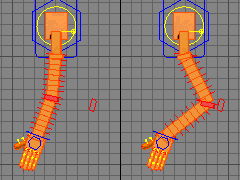
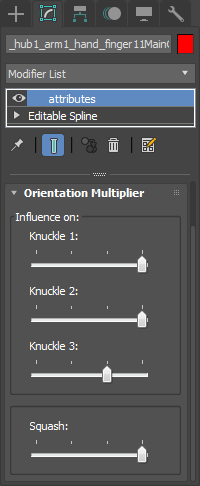

Arm & Leg¶
Controllers¶
There are six type of controller on arm.
- Shoulder controller:
- FK controllers:
- IK controllers:
- Stretch controllers:
- Finger controllers:
- Attribute holder:
Arm & Leg Attributes¶
- IK/FK Attributes
These attributes can be found in the attribute holder’s modifier stack.
- IK/FK Switch:
It blends or snaps between IK and FK controllers.
IK/FK switch:1.0 - IK/FK switch:0.0
- Stretchable:
It makes IK limb switch between stretchable and non-stretchable.

stretchable:0.0 - stretchable:1.0
- Soft IK:
It prevents IK arm or leg from poping.
soft IK:0.0 - soft IK:1.0
- Pole Snap:
Knee or elbow sticks to IK pole controller depends on slider value.
pole snap:0.0 - pole snap:1.0
- FK Abs/Rel:
FK arm orientation is affected from its parent rotation depends on slider value.
abs/rel:0.0 - abs/rel:1.0
- IK/FK Match:
It matches transforms from IK to FK or from FK to IK.
FK->IK - IK->FK
- Hide/Unhide Controllers:
- Hide or unhide FK, IK or Stretch controllers.
- Mirror Limb:
- It allows user pick mirrored limb if its exist. Pose manager uses this for flipping poses with mirror side
- IK Length:
- It allows users to change limb sizes seperately.
- Curve Attributes
- Squash:
It lets twist bones squashable depends on slider value.
squash:0.0 - squash:1.0
- Curvy:
Arms and legs can be curvy depends on slider value. Twist bone positions are distributed equally or bezier between top and bottom controllers depends on ‘Constant Space’ is checked or not.
curvy:0.0 - curvy:1.0
- Twist Orientation:
Twist bones follow orientation of child or parent bones depends on slider value. “Folow Upper” value makes twist bone orientation follow shoulder rotation, “Follow Middle” makes twistbones follows knee or elbow orientation, “Follow Lower” makes same for hand or foot bone.
all values:0.0 - all values:1.0
- Hand Scale:
It changes scale of hand or foot.
scale:0.4 - curvy:1.6
Finger Attributes¶
These attributes can be found in the red cross controller’s modifier stack at the top of each fingers.
- Influence on:
Red controllers allows animator to rotate all fingers as group. Each knuckle’s influence depends on its value.
- Squash:
It lets knuckles squashable depends on slider value.